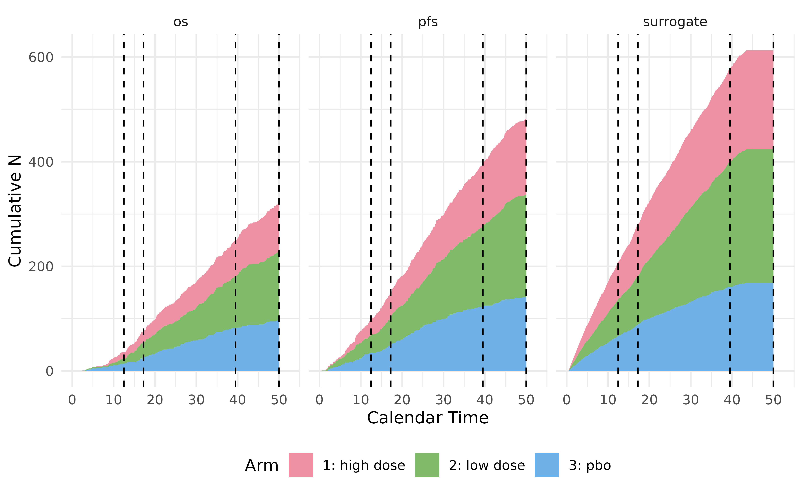

An Example of Simulating a Trial with Adaptive Design
adaptiveDesign.RmdIn this vignette, we illustrate how to use
TrialSimulator to simulate a trial with seamless adaptive
design, where dose selection, futility analysis, interim analysis are
triggered by user-defined events.
First we define endpoints in the trial. User can define arbitrary
number of endpoints of class Endpoint using the
new function in R6. PFS and OS are used as
endpoints in this trial. In phase II, a binary surrogate is used for
dose selection. We consider two active arms (low or high dose) and a
placebo arm with 1:1:1 randomization. In the placebo arm,
the median of PFS and OS are 5 and 14 months, respectively. The binary
endpoint surrogate is of a rate 0.02. By default, the
permuted block randomization is executed.
#' define endpoints in arm <pbo>
pfs <- Endpoint$new(name = 'pfs', type='tte',
generator=rexp, rate = log(2) / 5)
#' test the random number generator with a method of the class Endpoint
#' Note that user does not need to run this to set up a trial
#' This is for illustration purpose only
pfs_test <- pfs$test_generator(10000)
head(pfs_test)
#> pfs pfs_event
#> 1 1.453672 1
#> 2 11.858678 1
#> 3 37.331967 1
#> 4 6.147440 1
#> 5 3.359777 1
#> 6 3.931654 1
km <- survfit(Surv(pfs, pfs_event) ~ 1, data = pfs_test)
ggsurvplot(km, data = pfs_test, legend = 'none', ggtheme = theme_minimal())
Similarly, we can define OS and surrogate for placebo. Here built-in
functions rexp and rbinom are used.
User-defined functions are also supported as long as it has the first
argument n, number of samples to be drawn, and returns a
data frame of n rows. For any time-to-event endpoint (e.g.,
os) in the data frame, TrialSimulator expects
a column ending with _event (e.g., os_event)
being present as the event indicator. In general, user can define their
own generator that returns more than one endpoints. For example,
correlated endpoints would be generated together, using packages i.e.,
simstudy, gestate, simdata, etc.
Note that surrogate is not a time-to-event endpoint, so a
readout time (surrogate_readout) is also needed when
creating the endpoint. In this example, the readout time is 2 weeks.
Once all endpoints are defined, an arm can be defined using class
Arm and its method new.
#' define a time-to-event endpoint OS,
#' exponential distribution with median 13.71 months
os <- Endpoint$new(name = 'os', type='tte',
generator = rexp, rate = log(2)/14)
head(os$test_generator(1000))
#> os os_event
#> 1 0.03998971 1
#> 2 16.08737886 1
#> 3 2.29270761 1
#> 4 3.22044088 1
#> 5 29.38574672 1
#> 6 24.34706238 1
median(os$test_generator(1000)$os)
#> [1] 14.66214
#' define binary endpoint VRR, with readout time = 2 weeks
two_weeks <- 2 / 52 * 12
surrogate <- Endpoint$new(
name = 'surrogate', type = 'non-tte',
readout = c(surrogate = two_weeks),
generator = rbinom, size = 1, prob = .02)
head(surrogate$test_generator(1000))
#> surrogate surrogate_readout
#> 1 0 0.4615385
#> 2 0 0.4615385
#> 3 0 0.4615385
#> 4 1 0.4615385
#> 5 0 0.4615385
#> 6 0 0.4615385
mean(surrogate$test_generator(1000)$surrogate)
#> [1] 0.017
#' define the placebo arm
placebo <- Arm$new(name = 'pbo', description = 'placebo')
#' add endpoints into the arm
placebo$add_endpoints(pfs, os, surrogate)Likewise, we can define the three endpoints in the two active arms.
#' define endpoints in the low dose arm
#' hazard ratios
hr <- c(pfs_low = 0.7, os_low = 0.8, pfs_high = 0.65, os_high = 0.75)
pfs <- Endpoint$new(name = 'pfs', type='tte',
generator = rexp, rate = log(2)/5 * hr['pfs_low'])
surrogate <- Endpoint$new(
name = 'surrogate', type = 'non-tte', readout = c(surrogate = two_weeks),
generator = rbinom, size = 1, prob = .1) # lower probability
os <- Endpoint$new(name = 'os', type='tte',
generator=rexp, rate = log(2)/14 * hr['os_low'])
low <- Arm$new(name = 'low dose', description = 'treated with low dose')
low$add_endpoints(pfs, os, surrogate)
#' define endpoints in the high dose arm
pfs <- Endpoint$new(name = 'pfs', type='tte',
generator = rexp, rate = log(2)/5 * hr['pfs_high'])
surrogate <- Endpoint$new(
name = 'surrogate', type = 'non-tte', readout = c(surrogate = two_weeks),
generator = rbinom, size = 1, prob = .12) # higher probability
os <- Endpoint$new(name = 'os', type='tte',
generator=rexp, rate = log(2)/14 * hr['os_high'])
high <- Arm$new(name = 'high dose', description = 'treated with high dose')
high$add_endpoints(pfs, os, surrogate)With three arms, we can define a trial of class Trial,
where up to 1000 patients are enrolled. Recruitment curve are specified
through enroller with a built-in function
StaggeredRecruiter of piecewise constant rate: 20 patients
per month until 15 months, and then 25 patients per month until the end
of the trial. built-in random number functions like rexp
and user-defined function are also accepted. Sample ratio can be
specified through sample_ratio, which can be updated during
a trial using method update_sample_ratio. We set a dropout
rate 25% per 12 months. By default, no dropout if users do not specify
one.
accrual_rate <- data.frame(end_time = c(15, Inf),
piecewise_rate = c(20, 25))
trial <- Trial$new(
name = 'Trial-3415', n_patients = 1000,
seed = NULL, duration = 50,
enroller = StaggeredRecruiter, accrual_rate = accrual_rate,
dropout = rexp, rate = -log(1 - 0.25)/12
)
#> Seed is not specified. TrialSimulator sets it to 634300041
trial$add_arms(sample_ratio = c(1, 1, 1), low, high, placebo)
#> Arm(s) <low dose, high dose, pbo> are added to the trial.
#> Randomization is done for 1000 potential patients.
#> Data of 1000 potential patients are generated for the trial with 3 arm(s) <low dose, high dose, pbo>.The class Trial maintains a clock
(trial$get_current_time()). Data of patients who are
enrolled before the time point are considered locked and cannot be
changed. Data of patients who is not yet recruited will be regenerated
immediately whenever the setting of trial are updated. Note that
randomization may be re-executed. Trial’s setting is considered changed
if an arm is added (method add_arms), removed (method
remove_arms) or the sample ratio of one or multiple arm(s)
is updated (method update_sample_ratio). These methods are
usually invoked in user-defined action function when pre-specified
events are triggered, which will be discussed later.
The Trial only manages its arms and endpoints. In
TrialSimulator, a Listener is used to launch
and monitor a trial according to a set of Event that
register to it. An event consists two main parts, one is the condition
to trigger it, one is the action function defining the action to be
taken once the condition is met. Usually, a condition is met if a
pre-specified number of events (or samples) are observed, or a specific
calendar time is reached. In this example, four events are defined for
dose selection, futility, interim and final analysis.
Dose selection and a non-binding futility analysis are planned to be
done at month 12. A built-in function calendarTime is used
as the condition function. Once data is locked, and trial’s clock is
updated. A user-defined action function,
dose_selection_action will be executed by the listener. It
is recommended that the user should load the locked data at current time
in the action function. Analysis is then performed on it to support
further actions. In this example, an active arm can be dropped, and
sample ratio of the remaining arms are updated accordingly. All not yet
enrolled patients’ data is then regenerated afterward.
Trial has a public member function save for
user to save results for analysis or summary later. Note that
save will be invoked automatically when an event is
triggered to save event time.
#' action function is defined by user.
#' it always take at least two arguments,
#' (1) trial: an object of class Trial
#' (2) event_name: character of event's name
#' It is recommended that user should always requests for the locked data
#' at current time when the event is triggered, from which the user can
#' carry out various analysis fitting their purpose
dose_selection_action <- function(trial, event_name){
locked_data <- trial$get_locked_data(event_name)
## do something with locked_data, e.g. estimate, Dunnett test, etc.,
## to support further actions
## ...
## this is just for illustration
## pick an arm to drop
removed_arm <- sample(c('high dose', 'low dose', 'none'),
size = 1, prob = c(.2, .6, .2))
## action 1: remove an arm <affected_arm>
if(removed_arm == 'none'){
return(NULL)
}
trial$remove_arms(removed_arm)
## action 2: update sample ratio for the remaining arms
trial$update_sample_ratio('pbo', 1)
if(removed_arm == 'high dose'){
## if low dose arm is kept, increase its ratio
trial$update_sample_ratio('low dose', 2)
}else{
## if high dose arm is kept, reduce its ratio for safety
trial$update_sample_ratio('high dose', 1)
}
# action 3: non-binding futility analysis
z_pfs <- rnorm(1)
## save results, which can be accessed later using trial$get_output()
trial$save(value = removed_arm, name = 'removed_arm')
trial$save(value = z_pfs, name = 'z_futility')
## Not necessary because event time is saved automatically when the event is triggered
# trial$save(value = trial$get_event_time(event_name), name = 'futility_time')
## return for displaying purpose (print on screen later)
## user can return NULL
action <- data.frame(
order = c(1, 2, 3),
type = c('remove', 'update sample ratio', 'non-binding futility'),
value = c(removed_arm,
ifelse(removed_arm == 'high dose', 'low dose -> 2', 'high dose -> 1'),
paste0('z (pfs) = ', round(z_pfs, 2)))
)
action
}
## dose selection is carried out at month 12
dose_selection_event <- Event$new(name = 'dose selection', type = 'dose selection',
trigger_condition = calendarTime(12 + two_weeks),
action = dose_selection_action)Likewise, we can define events for interim and final analyses of PFS
and OS. The interim analysis for PFS will be carried out when 150 events
are observed in remaining arms. The triggering condition is set by the
built-in function eventNumber.
#' event to trigger interim analysis for PFS
pfs_interim_action <- function(trial, event_name){
locked_data <- trial$get_locked_data(event_name)
## this p-value is just for illustration
## it can be calculated from locked_data
pfs_interim_pval <- runif(1, 1e-3, .05)
trial$save(value = pfs_interim_pval, name = 'pfs_interim_pval')
## action 1: if pfs is significant, increase its sample ratio
## and reduce sample ratio of pbo.
## otherwise no action.
action <- paste0('No action. P-value: <pfs interim = ',
signif(pfs_interim_pval, 2), '>. ')
if(pfs_interim_pval < .05){
active_arm <- setdiff(trial$get_arms_name(), 'pbo')[1]
trial$update_sample_ratio(active_arm, 2)
trial$update_sample_ratio('pbo', 1)
## for displaying purpose, not essential
action <- data.frame(
order = c(1, 2),
type = 'update sample ratio',
value = c(paste0(active_arm, ' -> 2'), 'pbo -> 1')
)
}
## return for displaying purpose
action
}
pfs_interim_event <- Event$new(name = 'pfs interim', type = 'interim analysis',
trigger_condition = eventNumber('pfs', 150),
action = pfs_interim_action)The final analysis for PFS will be performed with an interim of OS
when 400 events are observed for PFS, or 250 events for OS, whichever
comes first. Note that combined triggering condition can be specified
using logical operation & and/or |. In
this example, we use
eventNumber('pfs', 400) | eventNumber('os', 250). Nested
condition combination are also supported. For example, we can require
that this event is not triggered until the trial has been run for at
least 30 months by
calendarTime(30) & (eventNumber('pfs', 400) | eventNumber('os', 250)).
#' event to trigger final analysis for PFS and interim analysis for OS
#' In this example, the triggering condition is defined by number of events
#' of PFS and OS together. See meet = 'any' below.
pfs_final_action <- function(trial, event_name){
locked_data <- trial$get_locked_data(event_name)
## do something with locked_data, e.g. estimate, test, etc.,
## to support further actions
## ...
## this is just for illustration
pfs_final_pval <- runif(1, 0, 0.1)
os_interim_pval <- runif(1, 0, 0.3)
trial$save(
data.frame(pfs_final_pval=pfs_final_pval, os_interim_pval=os_interim_pval)
)
## only compute p-values for pfs and os, no further action
action <- paste0('No action. P-values: <pfs final = ',
signif(pfs_final_pval, 2),
'>, <os interim = ', signif(os_interim_pval, 2), '>.')
## return for displaying purpose
action
}
## meet = 'any' means that final analysis for PFS is triggered
## when pfs event reaches 400 or os event reaches 250.
## if meet = 'all', then final analysis for PFS is carried out only if
## both conditions are met.
pfs_final_event <- Event$new(name = 'pfs final', type = 'pfs final/os interim',
trigger_condition =
eventNumber('pfs', 400) | eventNumber('os', 250),
action = pfs_final_action)Finally, one more analysis will be done for OS only at month 64.
#' event to trigger final analysis OS
#' triggering condition: month 50
os_final_action <- function(trial, event_name){
locked_data <- trial$get_locked_data(event_name)
## do something with locked_data, e.g. estimate, test, etc.,
## to support further actions
## ...
## this is just for illustration
os_final_pval <- runif(1, 1e-3, .1)
trial$save(os_final_pval, 'os_final_pval')
## action 1: end the trial, no futher action
action <- paste0('No action. P-value: <os final = ',
signif(os_final_pval, 2), '>. ')
## return for displaying purpose
action
}
os_final_event <- Event$new(name = 'os final', type = 'os final analysis',
trigger_condition = calendarTime(50),
action = os_final_action)Now we can register the four events with the listener, and launch the trial.
listener <- Listener$new()
#' register events with listener
listener$add_events(
dose_selection_event,
pfs_interim_event,
pfs_final_event,
os_final_event
)
#> An event <dose selection> is registered.
#> An event <pfs interim> is registered.
#> An event <pfs final> is registered.
#> An event <os final> is registered.
controller <- Controller$new(trial, listener)
controller$run(silent = FALSE)
#> Conditioin of event <dose selection> is being checked.
#> Data is locked at time = 12.4615384615385 for event <dose selection>.
#> Locked data can be accessed in Trial$get_locked_data('dose selection').
#> Number of events at lock time:
#> patient pfs os surrogate arms
#> 1 249 97 37 206 <low dose, high dose, pbo>
#>
#> Arm <low dose> is removed.
#> Sample ratio is updated to be <high dose: 1, pbo: 1>.
#> Trial data is rolling back to time = 12.4615384615385.
#> Randomization will be carried out again for unenrolled patients.
#> Randomization is done for 751 potential patients.
#> Data of 751 potential patients are generated for the trial with 2 arm(s) <high dose, pbo>.
#> Sample ratio has been udpated to be <high dose: 1, pbo: 1>.
#> Trial data is rolling back to time = 12.4615384615385.
#> Randomization will be carried out again for unenrolled patients.
#> Randomization is done for 751 potential patients.
#> Data of 751 potential patients are generated for the trial with 2 arm(s) <high dose, pbo>.
#> Sample ratio has been udpated to be <high dose: 1, pbo: 1>.
#> Trial data is rolling back to time = 12.4615384615385.
#> Randomization will be carried out again for unenrolled patients.
#> Randomization is done for 751 potential patients.
#> Data of 751 potential patients are generated for the trial with 2 arm(s) <high dose, pbo>.
#> Action for <dose selection> is executed:
#> order type value
#> 1 1 remove low dose
#> 2 2 update sample ratio high dose -> 1
#> 3 3 non-binding futility z (pfs) = 0.85
#> Conditioin of event <pfs interim> is being checked.
#> Data is locked at time = 21.7365529104553 for event <pfs interim>.
#> Locked data can be accessed in Trial$get_locked_data('pfs interim').
#> Number of events at lock time:
#> patient pfs os surrogate arms
#> 1 385 150 72 283 <high dose, pbo>
#>
#> Sample ratio has been udpated to be <high dose: 2, pbo: 1>.
#> Trial data is rolling back to time = 21.7365529104553.
#> Randomization will be carried out again for unenrolled patients.
#> Randomization is done for 532 potential patients.
#> Data of 532 potential patients are generated for the trial with 2 arm(s) <high dose, pbo>.
#> Sample ratio has been udpated to be <high dose: 2, pbo: 1>.
#> Trial data is rolling back to time = 21.7365529104553.
#> Randomization will be carried out again for unenrolled patients.
#> Randomization is done for 532 potential patients.
#> Data of 532 potential patients are generated for the trial with 2 arm(s) <high dose, pbo>.
#> Action for <pfs interim> is executed:
#> order type value
#> 1 1 update sample ratio high dose -> 2
#> 2 2 update sample ratio pbo -> 1
#> Conditioin of event <pfs final> is being checked.
#> Data is locked at time = 45.0927414108545 for event <pfs final>.
#> Locked data can be accessed in Trial$get_locked_data('pfs final').
#> Number of events at lock time:
#> patient pfs os surrogate arms
#> 1 917 397 250 536 <high dose, pbo>
#>
#> Action for <pfs final> is executed:
#> [1] "No action. P-values: <pfs final = 0.042>, <os interim = 0.074>."
#> Conditioin of event <os final> is being checked.
#> Data is locked at time = 50 for event <os final>.
#> Locked data can be accessed in Trial$get_locked_data('os final').
#> Number of events at lock time:
#> patient pfs os surrogate arms
#> 1 917 416 271 536 <high dose, pbo>
#>
#> Action for <os final> is executed:
#> [1] "No action. P-value: <os final = 0.065>. "
In the action functions, user can save results to the
Trial object using its public member function
save or any place they chose so that they can summarize the
trial later. The package can also summarize commonly used metrics by
default. For common design, the package can carry out standard analysis,
e.g., group sequential design with combination test or graphical test as
well, which would be implemented and tested later.
trial$get_output()
#> trial seed event_time_<dose selection>
#> 1 Trial-3415 634300041 12.46154
#> n_events_<dose selection>_<patient_id> n_events_<dose selection>_<pfs>
#> 1 249 97
#> n_events_<dose selection>_<os> n_events_<dose selection>_<surrogate>
#> 1 37 206
#> n_events_<dose selection>_<arms> removed_arm z_futility
#> 1 <low dose, high dose, pbo> low dose 0.8513003
#> event_time_<pfs interim> n_events_<pfs interim>_<patient_id>
#> 1 21.73655 385
#> n_events_<pfs interim>_<pfs> n_events_<pfs interim>_<os>
#> 1 150 72
#> n_events_<pfs interim>_<surrogate> n_events_<pfs interim>_<arms>
#> 1 283 <high dose, pbo>
#> pfs_interim_pval event_time_<pfs final> n_events_<pfs final>_<patient_id>
#> 1 0.02158786 45.09274 917
#> n_events_<pfs final>_<pfs> n_events_<pfs final>_<os>
#> 1 397 250
#> n_events_<pfs final>_<surrogate> n_events_<pfs final>_<arms> pfs_final_pval
#> 1 536 <high dose, pbo> 0.04169019
#> os_interim_pval event_time_<os final> n_events_<os final>_<patient_id>
#> 1 0.07357926 50 917
#> n_events_<os final>_<pfs> n_events_<os final>_<os>
#> 1 416 271
#> n_events_<os final>_<surrogate> n_events_<os final>_<arms> os_final_pval
#> 1 536 <high dose, pbo> 0.0648494
#> error_message
#> 1In summary, TrialSimulator abstracts the data generation
and management to allow user focus on implementing the statistical
analysis. It simulates a trial on patient level, and provide flexibility
in adaptive design.